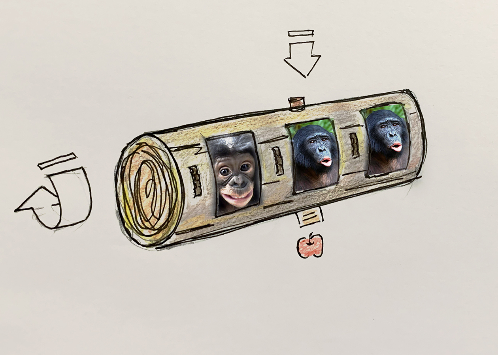

Week 11
Prototype on Proposal One
Working with the Bonobos

Recap on Initial Concept: Slot Machine
Based on the Bonob's facial recognition ability, build a Sloth machine with different types of facial expressions. If they can successfully matching different types of expression they will get rewarded with food. This initial idea is only targeting to excercise their facial expression recognition ability. However there will be more research on their social behavoir and how facial expression is used in different social activities to further this project. Idealy, I would love for this project to be able to provoke some of thier physical activites as well. Especially, their behvaior changes while in capativity as well as in the wild due to habituation.

Research on Facial Expression Recognition
Bonobs are capble of passing the mirror test, a rough test to see that if an animal is able to self-recognize visually. Research has also shown that they are, similar to humans have attentional bias towards emotional expression than neutral expression. In addition, the Bonobos also communocate through facial expression. In on study, the scientists looked specifically into how facial communication is used during bonobos' play session, "play faces are context specific and transmit an unequivocal positive message that cannot be misconceived"
[Click Here to View Full Research Paper] [Click Here to View Full Research Paper] [Click Here to View Full Research Paper]
[Click Here to View Full Research Paper]
Prototype

On the design of facial expression arrays
Based on varies experiments referenced above, it's safe to say that the bonobos are capable of recognizing faces as well as facial expressions among themselves. One article mentioned that they are also sensitive to similar species facial expressions as well.
The images are divided into three sets, there is only one matching set. There are repetitive images and same animal or object with various expressions. Therefore for the bonobos to be able to receive a reward they would have to first recognize the object, then correctly identify their facial expression, and match the similar expression.
This exercise can be executed on various difficulty levels, for example: using exact same images, limit it to one species only, testing facial expression across species or even experimenting with abstract facial expressions. In this prototype I chose a fairly complicated model to illustrate how this exercise can evolve
Concerns and Future Adjustment
The current prototype is only testing the mechanism of the slot machine. In my original proposal, there was a food reward system incorporated with the slot machine. However, I'm still researching on a, what I believe, an apportate reward system for the bonobos enrichment. As an endangered specie, bonobos are currently still loosing their habitat to humans, and is considered one of the most endangered great apes. In the perceivable future, bonobos will mostly likely remain in captivity. As far as food resources and predators, bonobos will then less likely to have encounters with those situation. Using food as reward is a promising method, as seen in many experiments and training. It is still one of the most used method in terms of training animals. It is no doubt that the bonobos are highly intelligent, scientist has successfully trained them to communicate with human with symbols, and they can understand human verbal questions after training.
In addition they are highly prosocial, and is one of the most gentle apes. Bonobos rarely show aggression, other prosocial behaviors would include sharing food, reconciliation pre and post conflicts. They are also very expressive with emotions, which can been seen often during youth play. With all that being said, there seems to be more potential ways as rewards for the bonobos that could also improve and actually enrich their life in captivity rather than just treats. However, I have not yet successfully connected with experts on Bonobos to further explore this area with enough scientific proof.
Illustrations by Brendan Wenzel, Jen Brandon Studio